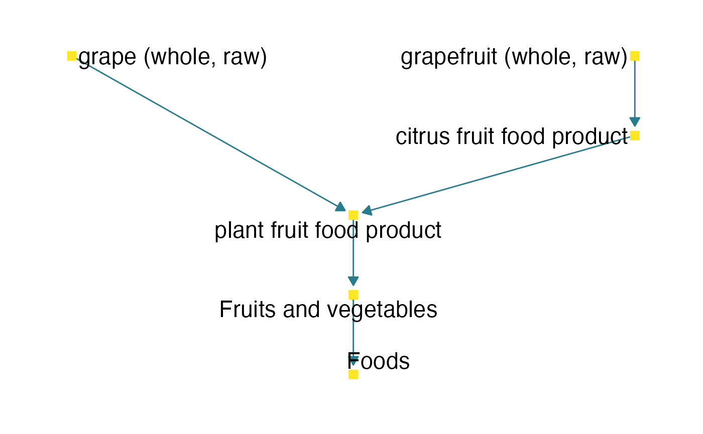
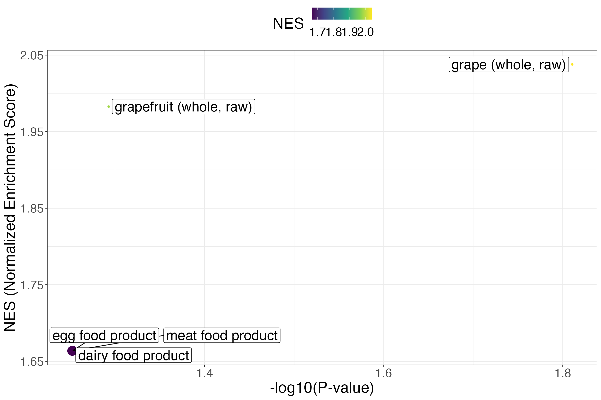
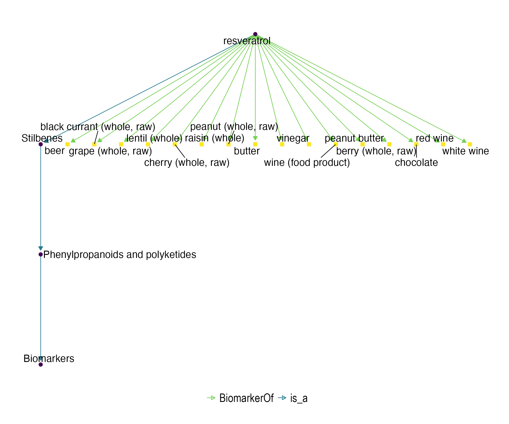

vignettes/MW_ST000291_enrichment.Rmd
MW_ST000291_enrichment.RmdCompiled date: 2021-05-14
Last edited: 2021-10-05
License: GPL-3
Run the following code to install the Bioconductor version of the package.
if (!requireNamespace("BiocManager", quietly = TRUE))
install.packages("BiocManager")
BiocManager::install("fobitools")We will also need some additional CRAN and Bioconductor packages for performing tasks such as statistical analysis and web scraping.
The Metabolomics Workbench, available at www.metabolomicsworkbench.org, is a public repository for metabolomics metadata and experimental data spanning various species and experimental platforms, metabolite standards, metabolite structures, protocols, tutorials, and training material and other educational resources. It provides a computational platform to integrate, analyze, track, deposit and disseminate large volumes of heterogeneous data from a wide variety of metabolomics studies including mass spectrometry (MS) and nuclear magnetic resonance spectrometry (NMR) data spanning over 20 different species covering all the major taxonomic categories including humans and other mammals, plants, insects, invertebrates and microorganisms (Sud et al. 2016).
The metabolomicsWorkbenchR Bioconductor package allows us to obtain data from the Metabolomics Workbench repository. In this vignette we will use the sample data set ST000291.
Eighteen healthy female college students between 21-29 years old with a normal BMI of 18.5-25 were recruited. Each subject was provided with a list of foods that contained significant amount of procyanidins, such as cranberries, apples, grapes, blueberries, chocolate and plums. They were advised to avoid these foods during the 1-6th day and the rest of the study. On the morning of the 7th day, a first-morning baseline urine sample and blood sample were collected from all human subjects after overnight fasting. Participants were then randomly allocated into two groups (n=9) to consume cranberry juice or apple juice. Six bottles (250 ml/bottle) of juice were given to participants to drink in the morning and evening of the 7th, 8th, and 9th day. On the morning of 10th day, all subjects returned to the clinical unit to provide a first-morning urine sample after overnight fasting. The blood sample was also collected from participants 30 min later after they drank another bottle of juice in the morning. After two-weeks of wash out period, participants switched to the alternative regimen and repeated the protocol. One human subject was dropped off this study because she missed part of her appointments. Another two human subjects were removed from urine metabolomics analyses because they failed to provide required urine samples after juice drinking.The present study aimed to investigate overall metabolic changes caused by procyanidins concentrates from cranberries and apples using a global LCMS based metabolomics approach. All plasma and urine samples were stored at -80ºC until analysis.
This study is composed of two complementary MS analyses, the positive mode (AN000464) and the negative mode (AN000465). Let’s download them both!
rvest
In many metabolomics studies, the reproducibility of analyses is severely affected by the poor interoperability of metabolite names and their identifiers. For this reason it is important to develop tools that facilitate the process of converting one type of identifier to another. In order to use the fobitools package, we need some generic identifier (such as PubChem, KEGG or HMDB) that allows us to obtain the corresponding FOBI identifier for each metabolite. The Metabolomics Workbench repository provides us with this information for many of the metabolites quantified in study ST000291 (Figure @ref(fig:metabolitenames)). In order to easily obtain this information, we will perform a web scraping operation using the rvest package.
Metabolite identifiers of the ST000291 Metabolomics Workbench study.
Below we obtain the PubChem and KEGG identifiers of the metabolites analyzed in the positive and negative mode directly from the Metabolomics Workbench website. We will then remove those duplicate identifiers.
metaboliteNamesURL <- "https://www.metabolomicsworkbench.org/data/show_metabolites_by_study.php?STUDY_ID=ST000291&SEARCH_TYPE=KNOWN&STUDY_TYPE=MS&RESULT_TYPE=1"
metaboliteNames <- metaboliteNamesURL %>%
read_html() %>%
html_nodes(".datatable")
metaboliteNames_negative <- metaboliteNames %>%
.[[1]] %>%
html_table() %>%
dplyr::select(`Metabolite Name`, PubChemCompound_ID, `Kegg Id`)
metaboliteNames_positive <- metaboliteNames %>%
.[[2]] %>%
html_table() %>%
dplyr::select(`Metabolite Name`, PubChemCompound_ID, `Kegg Id`)
metaboliteNames <- bind_rows(metaboliteNames_negative, metaboliteNames_positive) %>%
dplyr::rename(names = 1, PubChem = 2, KEGG = 3) %>%
mutate(KEGG = ifelse(KEGG == "-", "UNKNOWN", KEGG),
PubChem = ifelse(PubChem == "-", "UNKNOWN", PubChem)) %>%
filter(!duplicated(PubChem))Now we have to prepare the metadata and features in order to proceed with the statistical analysis. In this step we assign to each metabolite its PubChem identifier obtained in the previous step.
## negative mode features
features_negative <- assay(data_negative_mode) %>%
dplyr::slice(-n())
rownames(features_negative) <- rowData(data_negative_mode)$metabolite[1:(length(rowData(data_negative_mode)$metabolite)-1)]
## positive mode features
features_positive <- assay(data_positive_mode) %>%
dplyr::slice(-n())
rownames(features_positive) <- rowData(data_positive_mode)$metabolite[1:(length(rowData(data_positive_mode)$metabolite)-1)]
## combine positive and negative mode and set PubChem IDs as feature names
features <- bind_rows(features_negative, features_positive) %>%
tibble::rownames_to_column("names") %>%
right_join(metaboliteNames, by = "names") %>%
select(-names, -KEGG) %>%
tibble::column_to_rownames("PubChem")
## metadata
pdata <- colData(data_negative_mode) %>% # or "data_positive_mode". They are equal
as.data.frame() %>%
tibble::rownames_to_column("ID") %>%
mutate(Treatment = case_when(Treatment == "Baseline urine" ~ "Baseline",
Treatment == "Urine after drinking apple juice" ~ "Apple",
Treatment == "Urine after drinking cranberry juice" ~ "Cranberry"))POMA
POMA provides a structured, reproducible and easy-to-use workflow for the visualization, preprocessing, exploration, and statistical analysis of metabolomics and proteomics data. The main aim of this package is to enable a flexible data cleaning and statistical analysis processes in one comprehensible and user-friendly R package. POMA uses the standardized MSnbase data structures, to achieve the maximum flexibility and reproducibility and makes POMA compatible with other Bioconductor packages (Castellano-Escuder, Andrés-Lacueva, and Sánchez-Pla 2021).
MSnbase::MSnSet objectFirst, we create a MSnSet object that integrates both metadata and features in the same data structure.
data_msnset <- PomaMSnSetClass(target = pdata, features = t(features))Second, we perform the preprocessing step. This step includes the missing value imputation unsing the \(k\)-NN algorithm, log Pareto normalization (transformation and scaling) and outlier detection and cleaning. Once these steps are completed, we can proceed to the statistical analysis of these data.
data_preprocessed <- data_msnset %>%
PomaImpute(ZerosAsNA = TRUE, cutoff = 20, method = "knn") %>%
PomaNorm(method = "log_pareto") %>%
PomaOutliers(coef = 3)We use a limma model (Ritchie et al. 2015) to identify those most significant metabolites between the “Baseline urine” and “Urine after drinking cranberry juice” groups. With this analysis we expect to find metabolites related to cranberry intake.
limma_res <- data_preprocessed %>%
PomaLimma(contrast = "Baseline-Cranberry", adjust = "fdr") %>%
tibble::rownames_to_column("PubChemCID")
# show the first 10 features
limma_res %>%
dplyr::slice(1L:10L) %>%
kbl(row.names = FALSE, booktabs = TRUE) %>%
kable_styling(latex_options = c("striped"))| PubChemCID | logFC | AveExpr | t | P.Value | adj.P.Val | B |
|---|---|---|---|---|---|---|
| 54678503 | -2.015867 | -2.22e-05 | -7.319346 | 0.0e+00 | 0.0000035 | 11.031428 |
| 94214 | -1.436933 | -4.44e-05 | -5.720525 | 7.0e-07 | 0.0004658 | 5.827603 |
| 5378303 | -1.591333 | 0.00e+00 | -5.578285 | 1.2e-06 | 0.0005079 | 5.367712 |
| 71485 | -1.520600 | 4.44e-05 | -5.417065 | 2.0e-06 | 0.0005552 | 4.848693 |
| 5486800 | 1.175733 | 0.00e+00 | 5.403865 | 2.1e-06 | 0.0005552 | 4.806317 |
| 17531 | -1.490867 | 2.22e-05 | -5.350936 | 2.6e-06 | 0.0005552 | 4.636603 |
| 3035199 | -1.298667 | -2.22e-05 | -5.074320 | 6.6e-06 | 0.0011642 | 3.755554 |
| 439361 | -1.061267 | -2.22e-05 | -5.030209 | 7.6e-06 | 0.0011642 | 3.616094 |
| 5353 | -1.349133 | 4.44e-05 | -5.010060 | 8.2e-06 | 0.0011642 | 3.552497 |
| 1132 | -1.579533 | 2.22e-05 | -4.983350 | 8.9e-06 | 0.0011642 | 3.468300 |
Once we have the results of the statistical analysis and generic identifiers recognized in the FOBI ontology (Castellano-Escuder et al. 2020), we can proceed to perform one of the main functions provided by the fobitools package, the ID conversion. With the fobitools::id_convert() command, users can convert different IDs between FOBI, HMDB, KEGG, PubChem, InChIKey, InChICode, ChemSpider, and chemical names. We will then obtain the FOBI IDs from the PubChem IDs (obtained in the previous sections) and add them as a new column to the results of the limma model.
limma_FOBI_names <- limma_res %>%
dplyr::pull("PubChemCID") %>%
fobitools::id_convert()
# show the ID conversion results
limma_FOBI_names %>%
head() %>%
kbl(row.names = FALSE, booktabs = TRUE) %>%
kable_styling(latex_options = c("striped"))| FOBI | PubChemCID | ChemSpider |
|---|---|---|
| FOBI:030415 | 91 | 89 |
| FOBI:030711 | 1145 | 1113 |
| FOBI:030555 | 5280445 | 4444102 |
| FOBI:030709 | 1123 | 10675782 |
| FOBI:030625 | 7533 | 15484224 |
| FOBI:030397 | 1794427 | 1405788 |
Enrichment analysis denotes any method that benefits from biological pathway or network information to gain insight into a biological system (Creixell et al. 2015). In other words, these type of analyses integrate the existing biological knowledge (from different biological sources such as databases and ontologies) and the statistical results of omics studies, obtaining a deeper understanding of biological systems.
In most metabolomics studies, the output of statistical analysis is usually a list of features selected as statistically significant or statistically relevant according to a pre-defined statistical criteria. Enrichment analysis methods use these selected features to explore associated biologically relevant pathways, diseases, etc., depending on the nature of the input feature list (genes, metabolites, etc.) and the source used to extract the biological knowledge (GO, KEGG, FOBI, etc.).
Here, we present a tool that uses the FOBI information to perform different types of enrichment analyses. Therefore, the presented methods allow researchers to move from lists of metabolites to chemical classes and food groups associated with those lists, and consequently, to the study design.
Currently, the most popular used approaches for enrichment analysis are the over representation analysis (ORA) and the gene set enrichment analysis (GSEA), with its variants for other fields such as the metabolite set enrichment analysis (MSEA) (Xia and Wishart 2010).
ORA is one of the most used methods to perform enrichment analysis in metabolomics studies due to its simplicity and easy understanding. This method statistically evaluates the fraction of metabolites in a particular pathway found among the set of metabolites statistically selected. Thus, ORA is used to test if certain groups of metabolites are represented more than expected by chance given a feature list.
However, ORA has a number of limitations. The most important one is the need of using a certain threshold or criteria to select the feature list. This means that metabolites do not meet the selection criteria must be discarded. The second big limitation of ORA is that this method assumes independence of sets and features. In ORA, is assumed that each feature is independent of the other features and each set is independent of the other sets.
Here, we perform an ORA with the fobitools package, where we will use as a universe all the metabolites of the study present in FOBI and as a list those metabolites with a raw p-value < 0.01 in the limma results table.
metaboliteList <- limma_FOBI_names$FOBI[limma_FOBI_names$P.Value < 0.01]
metaboliteUniverse <- limma_FOBI_names$FOBI
fobitools::ora(metaboliteList = metaboliteList,
metaboliteUniverse = metaboliteUniverse,
pvalCutoff = 0.5) %>%
kbl(row.names = FALSE, booktabs = TRUE) %>%
kable_styling(latex_options = c("striped"))| className | classSize | overlap | pval | padj | overlapMetabolites |
|---|---|---|---|---|---|
| soft drink (dietetic) | 2 | 1 | 0.1038407 | 1 | FOBI:030627 |
| olive oil | 10 | 1 | 0.4623044 | 1 | FOBI:030340 |
As we can see, due to the limitations of this methodology and the small number of metabolites that meet the set statistical criterion, the results do not show a clear and obvious relationship with the design of the study, as the food groups that appear in the ORA results do not correspond to those foods administered in the intervention.
Gene Set Enrichment Analysis (GSEA) methodology was proposed for the first time in 2005, with the aim of improving the interpretation of gene expression data. The main purpose of GSEA is to determine whether members of a gene set \(S\) tend to occur toward the top (or bottom) of the gene list \(L\), in which case the gene set is correlated with the phenotypic class distinction (Subramanian et al. 2005).
This type of analysis basically consists of three key steps (Subramanian et al. 2005):
The first step consists on the calculation of an enrichment score (\(ES\)). This value indicates the degree to which a set \(S\) is overrepresented at the extremes (top or bottom) of the entire ranked gene list \(L\). The \(ES\) is calculated by walking down the list \(L\), increasing a running-sum statistic when a gene is found in \(S\) and decreasing it when a gene is not found in \(S\). The magnitude of the increment depends on the correlation of the gene with the phenotype. The \(ES\) is the maximum deviation from zero encountered in the random walk.
The second step is the estimation of significance level of \(ES\). The statistical significance (nominal p-value) of the \(ES\) is estimated by using an empirical phenotype-based permutation test that preserves the complex correlation structure of the gene expression data. The phenotype labels (\(L\)) are permuted and the \(ES\) of the \(S\) is recomputed for the permuted data, which generates a null distribution for the \(ES\). The empirical, nominal p-value of the observed \(ES\) is then calculated relative to this null distribution. The permutation of class labels (groups) preserves gene-gene correlations and, thus, provides a more biologically reasonable assessment of significance than would be obtained by permuting genes.
Finally, the third step consist on the adjustment for multiple hypothesis testing. When an entire database of gene sets is evaluated, the estimated significance level is adjusted for multiple hypothesis testing. First, the \(ES\) is normalized for each gene set to account for the size of the set, yielding a normalized enrichment score (NES). Then, the proportion of false positives is controlled by calculating the FDR corresponding to each NES.
In 2010, a modification of the GSEA methodology was presented for metabolomics studies. This method was called Metabolite Set Enrichment Analysis (MSEA) and its main aim was to help researchers identify and interpret patterns of human and mammalian metabolite concentration changes in a biologically meaningful context (Xia and Wishart 2010). MSEA is currently widely used in the metabolomics community and it is implemented and freely available at the known MetaboAnalyst web-based tool (Xia and Wishart 2010).
As can be seen, GSEA approach is more complex than the ORA methodology, both in terms of methodological aspects and understanding of the method.
The fobitools package provides a function to perform MSEA using the FOBI information. This function requires a ranked list. Here, we will use the metabolites obtained in the limma model ranked by raw p-values.
limma_FOBI_msea <- limma_FOBI_names %>%
select(FOBI, P.Value) %>%
filter(!is.na(FOBI)) %>%
dplyr::arrange(-dplyr::desc(abs(P.Value)))
FOBI_msea <- as.vector(limma_FOBI_msea$P.Value)
names(FOBI_msea) <- limma_FOBI_msea$FOBI
msea_res <- fobitools::msea(FOBI_msea, pvalCutoff = 0.06)
msea_res %>%
kbl(row.names = FALSE, booktabs = TRUE) %>%
kable_styling(latex_options = c("striped"))| className | classSize | log2err | ES | NES | pval | padj | leadingEdge |
|---|---|---|---|---|---|---|---|
| grape (whole, raw) | 1 | 0.3807304 | 1.0000000 | 2.037782 | 0.0154703 | 0.2797203 | FOBI:030590 |
| grapefruit (whole, raw) | 1 | 0.1978220 | 0.9729730 | 1.982706 | 0.0509491 | 0.2797203 | FOBI:030523 |
| dairy food product | 5 | 0.1882041 | 0.6383555 | 1.663786 | 0.0559441 | 0.2797203 | FOBI:030701, FOBI:030704, FOBI:030697, FOBI:030692 |
| egg food product | 5 | 0.1882041 | 0.6383555 | 1.663786 | 0.0559441 | 0.2797203 | FOBI:030701, FOBI:030704, FOBI:030697, FOBI:030692 |
| meat food product | 5 | 0.1882041 | 0.6383555 | 1.663786 | 0.0559441 | 0.2797203 | FOBI:030701, FOBI:030704, FOBI:030697, FOBI:030692 |
As we can see, the enrichment analysis with the MSEA method seems to be much more accurate than the ORA method, since the two classes that head the results table (“grape (whole, raw)” and “grapefruit (whole, raw)”) are clearly within the FOBI food group (set) “plant fruit food product”, which is aligned with the study intervention, cranberry juice intake.
fobi_graph(terms = c("FOODON:03301123", "FOODON:03301702"),
get = "anc",
labels = TRUE,
labelsize = 6)
ggplot2
ggplot(msea_res, aes(x = -log10(pval), y = NES, color = NES, size = classSize, label = className)) +
xlab("-log10(P-value)") +
ylab("NES (Normalized Enrichment Score)") +
geom_point() +
ggrepel::geom_label_repel(color = "black", size = 7) +
theme_bw() +
theme(legend.position = "top",
text = element_text(size = 22)) +
scale_color_viridis_c() +
scale_size(guide = "none")
FOBI_terms <- msea_res %>%
unnest(cols = leadingEdge)
fobitools::fobi %>%
filter(FOBI %in% FOBI_terms$leadingEdge) %>%
pull(id_code) %>%
fobi_graph(get = "anc",
labels = TRUE,
legend = TRUE,
labelsize = 6,
legendSize = 20)
The FOBI ontology is currently in its first release version, so it does not yet include information on many metabolites and food relationships. All future efforts will be directed at expanding this ontology, leading to a significant increase in the number of metabolites and metabolite-food relationships. The fobitools package provides the methodology for easy use of the FOBI ontology regardless of the amount of information it contains. Therefore, future FOBI improvements will also have a direct impact on the fobitools package, increasing its utility and allowing to perform, among others, more accurate, complete and robust enrichment analyses.
sessionInfo()
#> R version 4.0.2 (2020-06-22)
#> Platform: x86_64-apple-darwin17.0 (64-bit)
#> Running under: macOS 10.16
#>
#> Matrix products: default
#> BLAS: /Library/Frameworks/R.framework/Versions/4.0/Resources/lib/libRblas.dylib
#> LAPACK: /Library/Frameworks/R.framework/Versions/4.0/Resources/lib/libRlapack.dylib
#>
#> locale:
#> [1] es_ES.UTF-8/es_ES.UTF-8/es_ES.UTF-8/C/es_ES.UTF-8/es_ES.UTF-8
#>
#> attached base packages:
#> [1] parallel stats4 stats graphics grDevices utils datasets
#> [8] methods base
#>
#> other attached packages:
#> [1] SummarizedExperiment_1.20.0 Biobase_2.50.0
#> [3] GenomicRanges_1.42.0 GenomeInfoDb_1.26.7
#> [5] IRanges_2.24.1 S4Vectors_0.28.1
#> [7] BiocGenerics_0.36.1 MatrixGenerics_1.2.1
#> [9] matrixStats_0.58.0 metabolomicsWorkbenchR_1.0.0
#> [11] POMA_1.1.13 kableExtra_1.3.4
#> [13] ggrepel_0.9.1 rvest_1.0.0
#> [15] forcats_0.5.1 stringr_1.4.0
#> [17] dplyr_1.0.6 purrr_0.3.4
#> [19] readr_1.4.0 tidyr_1.1.3
#> [21] tibble_3.1.1 ggplot2_3.3.3
#> [23] tidyverse_1.3.1 fobitools_0.99.56
#> [25] BiocStyle_2.18.1
#>
#> loaded via a namespace (and not attached):
#> [1] utf8_1.2.1 tidyselect_1.1.1
#> [3] RSQLite_2.2.7 grid_4.0.2
#> [5] BiocParallel_1.24.1 gmp_0.6-2
#> [7] pROC_1.17.0.1 munsell_0.5.0
#> [9] codetools_0.2-18 ragg_1.1.2
#> [11] preprocessCore_1.52.1 withr_2.4.2
#> [13] colorspace_2.0-1 highr_0.9
#> [15] knitr_1.33 rstudioapi_0.13
#> [17] mzID_1.28.0 labeling_0.4.2
#> [19] GenomeInfoDbData_1.2.4 polyclip_1.10-0
#> [21] bit64_4.0.5 farver_2.1.0
#> [23] rprojroot_2.0.2 vctrs_0.3.8
#> [25] generics_0.1.0 ipred_0.9-11
#> [27] xfun_0.22 randomForest_4.6-14
#> [29] R6_2.5.0 doParallel_1.0.16
#> [31] clue_0.3-59 graphlayouts_0.7.1
#> [33] DelayedArray_0.16.3 bitops_1.0-7
#> [35] cachem_1.0.4 fgsea_1.16.0
#> [37] assertthat_0.2.1 scales_1.1.1
#> [39] vroom_1.4.0 ggraph_2.0.5
#> [41] nnet_7.3-16 gtable_0.3.0
#> [43] Cairo_1.5-12.2 affy_1.68.0
#> [45] tidygraph_1.2.0 timeDate_3043.102
#> [47] tictoc_1.0.1 rlang_0.4.11
#> [49] clisymbols_1.2.0 systemfonts_1.0.1
#> [51] mzR_2.24.1 GlobalOptions_0.1.2
#> [53] splines_4.0.2 ModelMetrics_1.2.2.2
#> [55] impute_1.64.0 selectr_0.4-2
#> [57] broom_0.7.6 RecordLinkage_0.4-12.1
#> [59] reshape2_1.4.4 BiocManager_1.30.12
#> [61] yaml_2.2.1 modelr_0.1.8
#> [63] backports_1.2.1 caret_6.0-86
#> [65] tools_4.0.2 lava_1.6.9
#> [67] bookdown_0.22 affyio_1.60.0
#> [69] ellipsis_0.3.2 jquerylib_0.1.4
#> [71] ff_4.0.4 RColorBrewer_1.1-2
#> [73] proxy_0.4-25 MSnbase_2.16.1
#> [75] MultiAssayExperiment_1.16.0 Rcpp_1.0.6
#> [77] plyr_1.8.6 zlibbioc_1.36.0
#> [79] RCurl_1.98-1.3 rpart_4.1-15
#> [81] GetoptLong_1.0.5 viridis_0.6.1
#> [83] haven_2.4.1 cluster_2.1.2
#> [85] fs_1.5.0 magrittr_2.0.1
#> [87] RSpectra_0.16-0 data.table_1.14.0
#> [89] circlize_0.4.12 reprex_2.0.0
#> [91] pcaMethods_1.82.0 ProtGenerics_1.22.0
#> [93] hms_1.0.0 patchwork_1.1.1
#> [95] evaluate_0.14 xtable_1.8-4
#> [97] XML_3.99-0.6 readxl_1.3.1
#> [99] gridExtra_2.3 shape_1.4.5
#> [101] compiler_4.0.2 ellipse_0.4.2
#> [103] ncdf4_1.17 crayon_1.4.1
#> [105] htmltools_0.5.1.1 mgcv_1.8-35
#> [107] corpcor_1.6.9 qdapRegex_0.7.2
#> [109] lubridate_1.7.10 DBI_1.1.1
#> [111] tweenr_1.0.2 dbplyr_2.1.1
#> [113] ComplexHeatmap_2.6.2 MASS_7.3-54
#> [115] Matrix_1.3-2 permute_0.9-5
#> [117] cli_2.5.0 vsn_3.58.0
#> [119] gower_0.2.2 textclean_0.9.3
#> [121] evd_2.3-3 RankProd_3.16.0
#> [123] igraph_1.2.6 pkgconfig_2.0.3
#> [125] pkgdown_1.6.1 recipes_0.1.16
#> [127] MALDIquant_1.19.3 xml2_1.3.2
#> [129] foreach_1.5.1 rARPACK_0.11-0
#> [131] svglite_2.0.0 ggcorrplot_0.1.3
#> [133] bslib_0.2.4 XVector_0.30.0
#> [135] webshot_0.5.2 prodlim_2019.11.13
#> [137] ada_2.0-5 digest_0.6.27
#> [139] vegan_2.5-7 rmarkdown_2.7
#> [141] cellranger_1.1.0 fastmatch_1.1-0
#> [143] curl_4.3.1 rjson_0.2.20
#> [145] glasso_1.11 nlme_3.1-152
#> [147] lifecycle_1.0.0 jsonlite_1.7.2
#> [149] mixOmics_6.14.1 desc_1.3.0
#> [151] viridisLite_0.4.0 limma_3.46.0
#> [153] fansi_0.4.2 pillar_1.6.0
#> [155] ontologyIndex_2.7 lattice_0.20-44
#> [157] fastmap_1.1.0 httr_1.4.2
#> [159] survival_3.2-11 glue_1.4.2
#> [161] png_0.1-7 iterators_1.0.13
#> [163] glmnet_4.1-1 bit_4.0.4
#> [165] ggforce_0.3.3 class_7.3-19
#> [167] stringi_1.6.1 sass_0.3.1
#> [169] struct_1.2.0 blob_1.2.1
#> [171] textshaping_0.3.3 memoise_2.0.0
#> [173] Rmpfr_0.8-4 e1071_1.7-6Castellano-Escuder, Pol, Cristina Andrés-Lacueva, and Alex Sánchez-Pla. 2021. POMA: User-Friendly Workflow for Pre-Processing and Statistical Analysis of Mass Spectrometry Data. https://github.com/pcastellanoescuder/POMA.
Castellano-Escuder, Pol, Raúl González-Domı́nguez, David S Wishart, Cristina Andrés-Lacueva, and Alex Sánchez-Pla. 2020. “FOBI: An Ontology to Represent Food Intake Data and Associate It with Metabolomic Data.” Database 2020.
Creixell, Pau, Jüri Reimand, Syed Haider, Guanming Wu, Tatsuhiro Shibata, Miguel Vazquez, Ville Mustonen, et al. 2015. “Pathway and Network Analysis of Cancer Genomes.” Nature Methods 12 (7): 615.
Ritchie, Matthew E, Belinda Phipson, Di Wu, Yifang Hu, Charity W Law, Wei Shi, and Gordon K Smyth. 2015. “limma Powers Differential Expression Analyses for RNA-Sequencing and Microarray Studies.” Nucleic Acids Research 43 (7): e47. https://doi.org/10.1093/nar/gkv007.
Subramanian, Aravind, Pablo Tamayo, Vamsi K Mootha, Sayan Mukherjee, Benjamin L Ebert, Michael A Gillette, Amanda Paulovich, et al. 2005. “Gene Set Enrichment Analysis: A Knowledge-Based Approach for Interpreting Genome-Wide Expression Profiles.” Proceedings of the National Academy of Sciences 102 (43): 15545–50.
Sud, Manish, Eoin Fahy, Dawn Cotter, Kenan Azam, Ilango Vadivelu, Charles Burant, Arthur Edison, et al. 2016. “Metabolomics Workbench: An International Repository for Metabolomics Data and Metadata, Metabolite Standards, Protocols, Tutorials and Training, and Analysis Tools.” Nucleic Acids Research 44 (D1): D463–D470.
Xia, Jianguo, and David S Wishart. 2010. “MSEA: A Web-Based Tool to Identify Biologically Meaningful Patterns in Quantitative Metabolomic Data.” Nucleic Acids Research 38 (suppl_2): W71–W77.